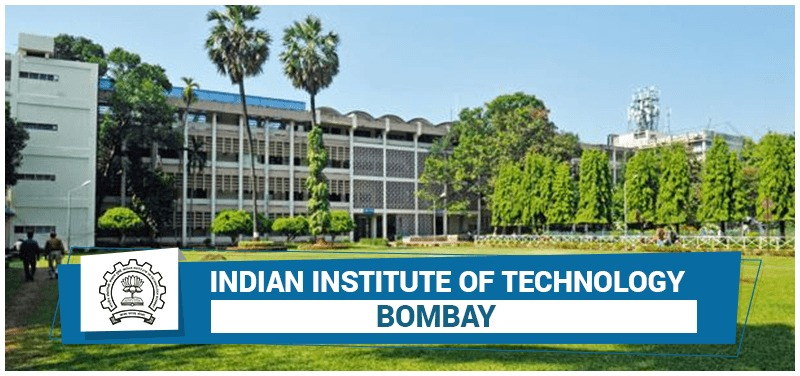

IIT Bombay
IIT Bombay, established in 1958, is one of the most prestigious educational institutions in India. It offers a wide range of undergraduate and postgraduate programs in engineering, science, and management...
Visit IIT Bombay WebsiteIIT Bombay, established in 1958, is one of the most prestigious educational institutions in India. It offers a wide range of undergraduate and postgraduate programs in engineering, science, and management...
Visit IIT Bombay Website